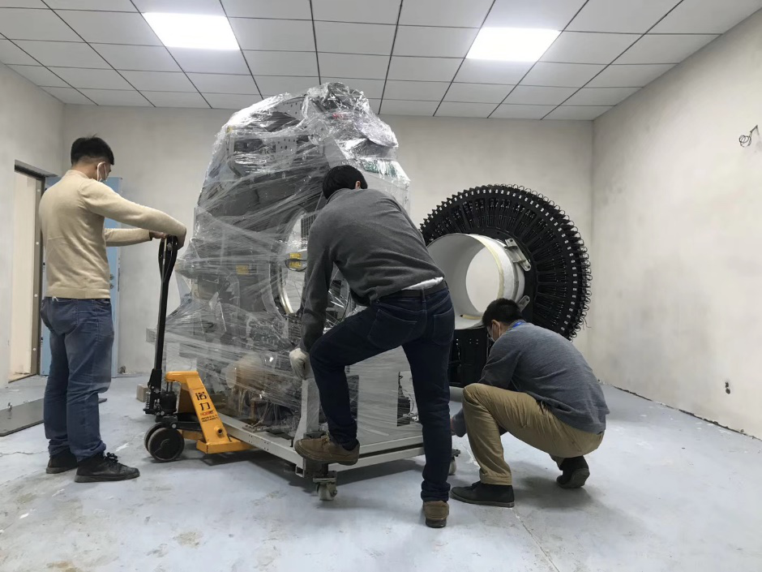
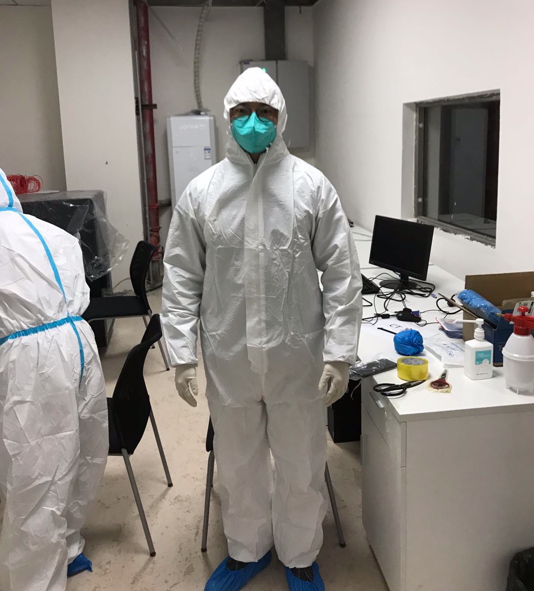

张博获得2020年“全国向上向善好青年”称号
来源：华中科技大学生命科学与技术学院
（通讯员 杨亚 李镀锋）在五四青年节来临之际，共青团中央、全国青联共同颁授第24届“中国青年五四奖章”，表彰青年中的优秀典型和模范代表。同时，共青团中央公布了2020年“全国向上向善好青年”名单，我院博士研究生张博入围“勤学上进好青年”。
张博同学是我校生物医学工程18级博士生，曾荣获“互联网+”创新创业大赛全国金奖、湖北省五一劳动奖章。作为核心骨干完成的全数字PET成果入选两院院士评选的“2019中国十大科技进展新闻”。疫情期间，张博所在团队为鄂州医院提供医学影像设备及技术支持，连续35天带领团队成员奋战在抗疫一线。
2月23日，鄂州政府告知一定点抗疫的医院紧缺影像设备。在得知消息后，张博带领团队自告奋勇、带领团队连夜赶到鄂州，在连续两天睡眠不足3小时的高强度工作后，团队不辱使命，仅用48小时将相关医学影像设备安装交付到医院。设备投入使用后，团队成员继续坚守抗疫一线，协助医护人员对病人进行扫描工作。秉着“疫情不退，我们不撤”的精神，张博与团队成员一直坚守到3月19日迎来最后一个病人出院。
张博的博士生导师谢庆国教授作为数字PET发明人，带领张博和团队所研发的临床全数字PET/CT高端医疗装备，于2018年获得国家药品监督管理局批准的创新医疗器械特别审批程序，并于2019年5月底获得国家药品监督管理局批准的三类医疗器械注册证，获得市场准入资质。2020年初，该设备完成首台套的销售和装机，着力于服务百姓健康。

全国向上向善好青年“推选活动自2014年10月启动以来，得到社会公众热情参与。今年活动推广以来社会各界广泛关注，特别是在新冠肺炎疫情防控工作中涌现一大批表现突出、事迹感人的优秀青年典型。团中央共收到来自全国各地各行各业10288位好青年的推荐申请。青年参与学习、分享和点赞量达到2114.34万次，最终确定了爱岗敬业、创新创业、勤学上进、扶贫助困、崇德守信5类共计150名”全国向上向善好青年“拟入围名单。
以下是央视报道新闻视频：